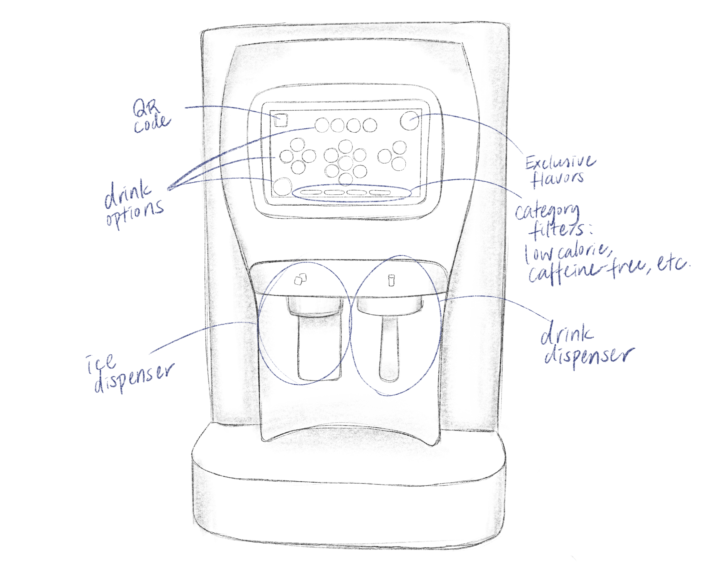
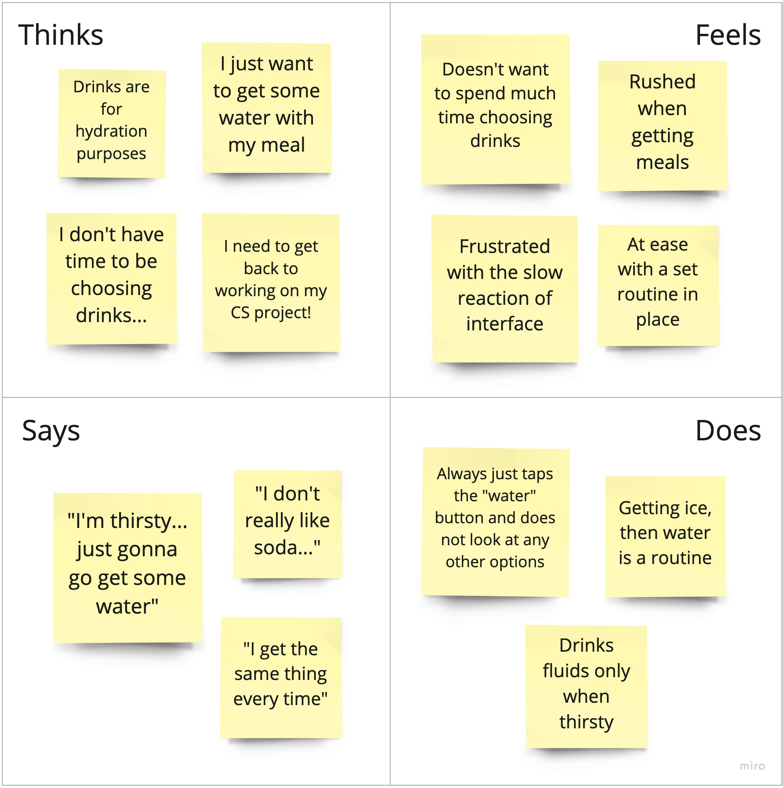
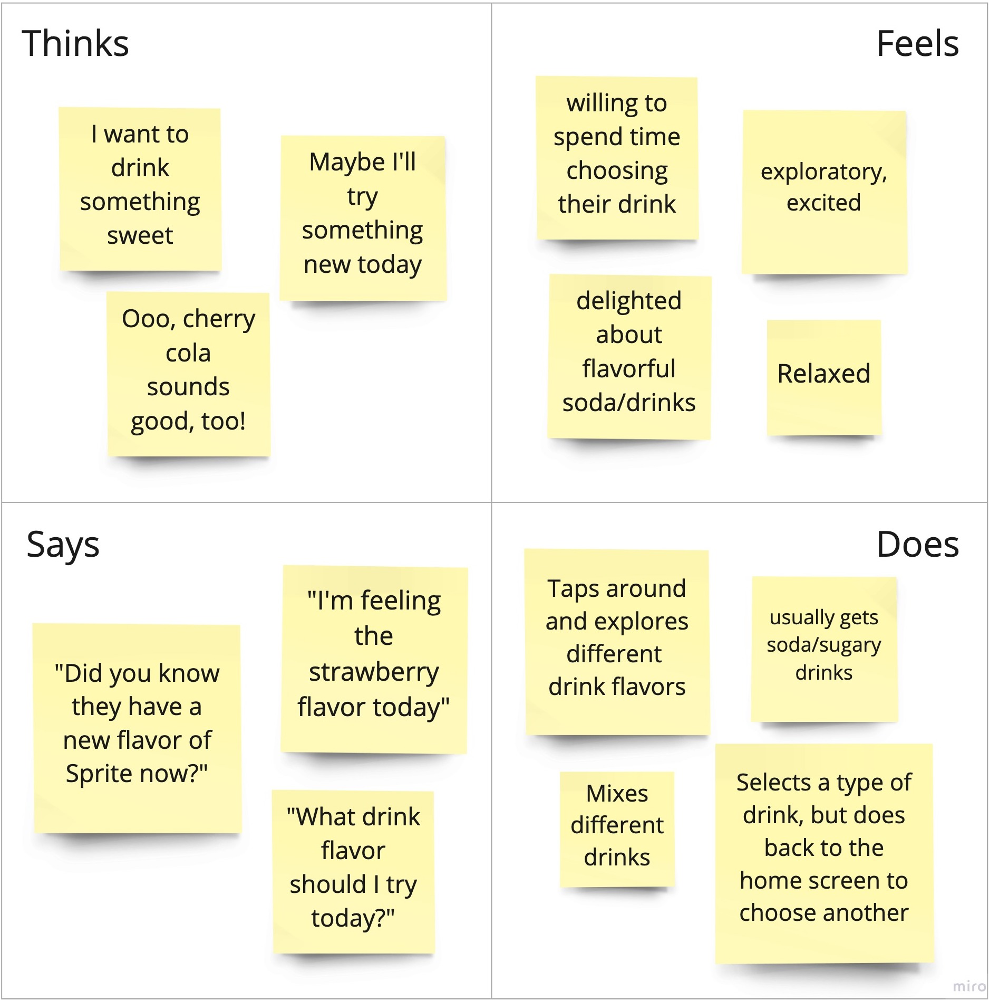

The goal of this assignment was to understand, empathize with, and tell the story
of users of a particular interface.
To achieve this, I observed and interviewed
users of the Coca Cola drink dispenser placed in the Ratty.
Based on the findings, I generated two different personas to best represent the
users, and a storyboard to tell one of the personas' story.
Scroll down to read about more details and my findings of the assignment!
Interface

Coca Cola Drink Dispenser
Key Components
touch panel
drink options: allows the user to tap and select various flavors for each option
category filter buttons: allows the user to filter via low/no calorie, caffeine free, etc.
exclusive flavors button: displays and allows the user to select exclusive flavors not found elsewhere on the interface
QR code: the user can scan to pour a drink contact-free
ice dispenser: the user can dispense ice by pressing on the metal bar with a cup
drink dispenser: the user can dispense the selected drink by pressing on the metal part with a cup
This interface intends to solve the problem of having to get different
kinds of drinks from different dispensers by combining all kinds (soda,
tea, lemonade, water, etc.) into one drink dispenser with a digital
selection panel.
To use the machine, a user must first press on the ice dispensing bar with their cup to obtain ice (if they want),
select a drink type/flavor on the digital screen, and press on the drink dispensing bar to pour their drink.
Research
To first find out how users of the drink dispenser interact with the interface, I observed and interviewed four different users at the Ratty.
Observations
Many users seemed accustomed to the way the machine worked.
No user was confused as to which dispenser was for ice vs. drinks.
Only 1 user paused looking at the various flavors once selecting the drink type.
The users who changed their minds tended to pick a drink from the center cluster of drinks.
All users went to press the ice dispenser before looking at the digital screen.
Questions
What was the feature you first noticed?
Did you already have a drink in mind coming in?
If so, did the design/placement of the drink buttons change your mind at all?
Was the flow clear? In other words, was what to do next obvious?
Was there anything surprising or unexpected about the interface?
Did you notice the buttons on the bottom or the exclusive flavor options?
Responses
3 out of the 4 users interviewed answered that the first feature they noticed was the collection of many options and colors on the screen.
Some already had a drink in mind, but others changed their mind after looking at the options. Those who changed their minds were not exactly sure whether their decisions were influenced by the placement/design of the drink options.
All users found the flow and the expected actions to take very clear and unconfusing. They are also accustomed users of the machine, so not much thinking was required. However, some did point out frustrations with the slow reaction time of the interface and confusion with how the drinks were clustered together.
No surprising elements were found while they were interacting with the interface, but later on, users were surprised to find the filters and the Exclusive Flavors button once looking at the interface closely.
3 out of the 4 users never noticed the filters. Most users had also dismissed the Exclusive Flavors button to be an advertisement, as it seemed like a non-button, static element similar to the QR code.
Personas
Next, I created two different personas to represent the archetypes of the interviewed and observed users.
Sofia Randi
Sofia...
is a Junior at Brown studying computer science
is often busy and doesn't spend long periods of time on meals
likes to be healthy and limits her sugar-intake, and generally avoids sugary drinks
generally likes having a routine lifestyle and does not like to be out of her comfort zone
Sofia's Empathy Map

Parker Koche
Parker...
is a Freshman at Brown who is undecided and loves to explore
loves exploring courses in different departments, restaurants in Providence, and new drinks!
likes to take time at their meals and enjoy conversations with friends
is usually fickle, and their mind is easily changed
Parker's Empathy Map

Storyboard
Lastly, below is a storyboard portraying what Parker's usage of the Coca Cola drink dispenser might look like :)
Takeaways
Some of the key takeaways and findings of this assignment were...
The users of the drink dispenser are generally divided into two groups:
users who appreciate the various, colorful flavors offered, and are willing to explore different flavors
users who simply want to hydrate and are not willing to spend time exploring other options
Although the first group of users may greatly benefit from the Exclusive Flavors page and the various filters offered, majority of users do not notice their existence.
Many users are repeat users, and are by now accustomed to the flow of the interface. Regardless, all interviewed users found the interface to be intuitive.